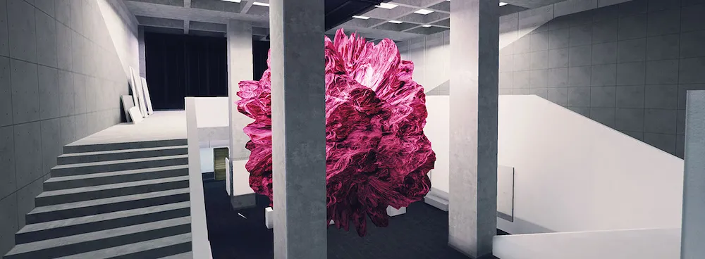

// Warp-01
// Experiment
WARP-01 is my graduation project for the Rubika Supinfogame school, developed during 8 months between 2015 and 2016.
>> Modelling and texturing of the architectural assets
>> Level design, building and lightning
The project was developed for a new VR technology : an immersive space called a "CAVE". In a nutshell it is a 3x6 meters room with 3d images projected on the walls.
The user can move inside this room and as his 3d glasses are tracked by the cave, the 3d space will be re-created around him depending of his position and where he is looking at.
The experience itself is about manipulating and experimenting with abstract 3d shapes, which are visual.
You will have to understand how does these shapes works, and how to interact with them in order to progress.
You can see some of these shapes in the following video.

The experience is setup in an abandoned brutalist museum.
Theses are screenshots of the architecture and level design, all taken within Unity.
While the player starts to explore and to interact with its environment, the surrounding architecture will slowly be altered and destroyed.